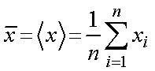
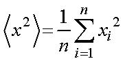
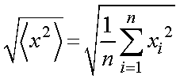

実分散，標準偏差の計算によく，ｎ－１，の値が使われます．
何となくそういうものだ，と使ったり，できるだけ値を小さくするために，ｎ，を使ったり，まあｎが大きくなれば，その差は小さくなるので，使ったり使わなかったりということがほとんどと思いますが，一度きちんと考えてみましょう．
さて，まずは参考したサイトを列挙します．
読めば必ずわかる分散分析の基礎 （elsur.jpn.org）
なぜ不偏分散はN-1 で割るのか （山口大学教育学部小杉研究室）
母分散の推定(n-1で割る理由) （関西学院高等部 教諭：丹羽時彦）
を寄せ集めてまとめてみました．
まずは，基本から，
データが，x1, x2, x3, x4, .....xn,
あった場合に，
・ 平均

・ 分散

・ 標準偏差

つまり，
となるわけです．
ここまではあくまで理想的な系で，実際の実験では，全ての情報を得ることはできず，ごくごく一部のサンプルのみから全体を推定しなくてはなりません．
たとえば，視聴率調査などは全世帯の調査はできませんよね．．
また，分母を見ると，すべて，ｎ，ですよね？
表題にあるように，ｎ－１，ではありません．
次にここを重点的に考えていきましょう．